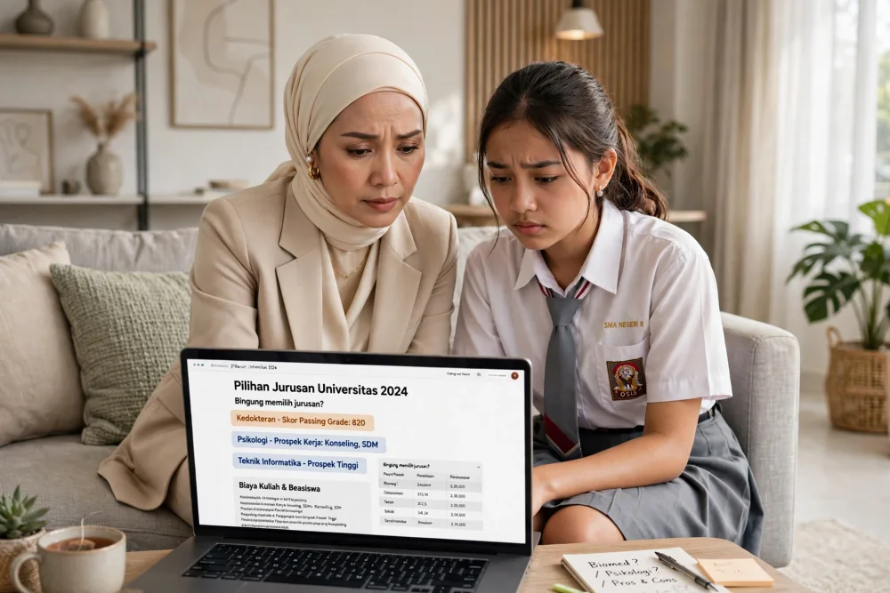

Melalui 6 tes, ReadyScore membantu anak mengenali minat, kemampuan, pola perilaku, emosi, sikap kerja, dan preferensi belajar. Baca hasilnya bersama, lalu eksplorasi pilihan jurusan dengan lebih terarah.
6 tes + profiling dan laporan personal untuk satu peserta
✓ Online dari rumah ✓ Hasil setelah tes selesai ✓ Penjelasan untuk orang tua

CONTOH PETA MINAT
Investigative + Social
Untuk dieksplorasi: Psikologi, Hub. Internasional, Edukasi
CONTOH PREFERENSI BELAJAR
Visual + Diskusi
Contoh strategi belajar untuk dicoba dan dievaluasi
HASIL UNTUK DISKUSI
Dibaca bersama orang tua & anak
SEBELUM MENENTUKAN PILIHAN
6 Tes
Minat, kemampuan, perilaku, emosi, sikap kerja, dan preferensi belajar dalam satu paket.
20 Menit
Per tes sesuai katalog. Enam tes sekitar 120 menit; pengerjaan dapat dicicil.
30 Hari
Rencana eksplorasi untuk mencoba aktivitas, membandingkan pilihan, dan berdiskusi bersama.
“Apa yang anak sukai, apa yang ingin ia coba, dan pilihan apa yang layak dipelajari?” Mulai dari pertanyaan ini sebelum memutuskan jurusan.
Pertanyaan diskusi keluarga · bukan testimoni pelanggan
EMPAT BEKAL MEMILIH JURUSAN
Tes memberi bahan awal. Lengkapi dengan pengalaman anak, informasi program studi, dan percakapan keluarga.
Minat
Bekal diskusi keluarga
Apa yang membuat anak ingin belajar lebih jauh?
Kemampuan
Bekal diskusi keluarga
Bagaimana anak bernalar dan memecahkan masalah?
Kebiasaan
Bekal diskusi keluarga
Bagaimana anak belajar, bekerja sama, dan merespons tantangan?
Pengalaman
Bekal diskusi keluarga
Apa yang dirasakan anak setelah mencoba aktivitas terkait jurusan?
DISKUSI ORANG TUA & ANAK
Mulai dari mendengarkan
Panduan percakapan keluarga
Setiap anak memiliki pengalaman, ketertarikan, dan cara belajar yang berbeda.
Hasil assessment memberi bahan untuk bertanya dan mencoba, lalu menimbang pilihan bersama anak.
Beri ruang untuk mencoba
“Aktivitas apa yang ingin kamu coba minggu ini untuk mengenal jurusan itu?”
Pertanyaan diskusi keluarga
Tinjau pilihan secara bertahap
Bandingkan minat, kemampuan, pengalaman mencoba, informasi program studi, dan kondisi keluarga.
6 TES DALAM SATU PAKET
Paket mencakup Cognitive, Emotional Intelligence, DISC, RIASEC, Work Attitude, dan Learning Preference. Gunakan hasil sebagai bahan eksplorasi, bukan penentu tunggal jurusan.
Apa yang benar-benar dia nikmati berjam-jam tanpa disuruh? Dari 6 klaster minat, kami tunjukkan 3 teratas yang paling kuat. Lengkap dengan contoh jurusan & karir yang nyambung.
Apakah dia pemimpin, pendukung, penggerak, atau penstabil? Bagaimana dia bekerja dalam tim, mengambil keputusan, dan menghadapi tekanan tugas kuliah.
Mengenali pola kesadaran emosi, pengelolaan emosi, empati, dan respons dalam hubungan sosial. Hasilnya menjadi bahan refleksi, bukan diagnosis kondisi mental.
Mengenali preferensi visual, auditori, dan kinestetik. Gunakan sebagai ide mencoba strategi belajar, lalu evaluasi dari pengalaman anak.
Mengenali pola penalaran verbal, numerik, logis, dan abstrak melalui pertanyaan objektif.
Mengenali kebiasaan bekerja, pengambilan keputusan, interaksi, penyesuaian diri, dan kedisiplinan.
Hasil per tes dan profiling membantu melihat pola yang layak dibicarakan dan diuji melalui pengalaman nyata.
Lihat Contoh Laporan →CARA KERJA — RINGAN & FLEKSIBEL
Rencanakan waktu dengan nyaman
Enam tes membutuhkan sekitar 120 menit sesuai durasi katalog. Tidak perlu sekaligus: kerjakan per tes saat anak siap dan dapat berkonsentrasi.
Hasil tersedia setelah tes terkait selesai • Tidak perlu download aplikasi
Pertanyaan sehari-hari, bukan soal ujian. Contoh: 'Lebih suka merakit, menulis, atau membantu orang?' Tidak ada jawaban benar-salah. Cukup jujur.
Sistem merangkum jawaban menjadi hasil per tes dan profil lintas tes. Baca penjelasan dan batas interpretasinya bersama anak.
Lihat pilihan jurusan yang layak dieksplorasi, alasan pendukung, dan rencana kegiatan selama empat minggu. Lengkapi dengan informasi resmi program studi dan kampus tujuan.
KENAPA TIDAK HARUS SEKALIGUS?
Atur pengerjaan sesuai kesiapan anak. Gunakan jeda antar tes dan lanjutkan ketika dapat berkonsentrasi. Durasi ini per tes, bukan keseluruhan paket.
CONTOH LAPORAN
LIHAT CONTOH FORMATContoh format laporan · hasil setiap peserta dapat berbeda
YANG ANDA DAPATKAN
Bahasa Orang Tua
Istilah tes disertai penjelasan, agar hasil dapat dihubungkan dengan kegiatan dan pengalaman sehari-hari anak.
Pilihan Jurusan untuk Dieksplorasi
Lihat alasan pendukung, pertanyaan yang masih terbuka, dan kegiatan untuk menguji ketertarikan anak pada suatu pilihan.
Bahan Diskusi & Eksplorasi
Gunakan laporan untuk berdiskusi dengan anak, guru BK, atau konsultan pendidikan. Pertimbangkan juga pengalaman, prestasi, persyaratan masuk, dan biaya kuliah.
PAKET LENGKAP · SATU PESERTA
Hasil untuk eksplorasi pilihan pendidikan. Persyaratan tes resmi dan penerimaan tetap mengikuti masing-masing kampus.
6 tes + hasil per tes + profiling lintas tes + laporan personal dan rencana eksplorasi.
Rp249.000
Estimasi nilai Rp7.500.000
HARGA PENAWARAN
🔒 Diproses melalui Midtrans · Satu kali pembayaran
Satu harga untuk enam tes dan hasil dalam paket. Hasil adalah bahan eksplorasi, bukan jaminan diterima di jurusan atau kampus tertentu.
Estimasi nilai internal ReadyScore: 6 tes Rp6.000.000, profiling Rp1.000.000, dan laporan Rp500.000. Ini bukan harga jual sebelumnya. Total yang dibayar Rp249.000 untuk satu peserta.
BAHAN DISKUSI SETELAH TES
Contoh pertanyaan berikut membantu menghubungkan hasil tes dengan pengalaman sehari-hari.
“Aktivitas apa yang membuat kamu ingin mencari tahu lebih jauh? Apa yang ingin kamu coba berikutnya?”
Minat & pengalaman
Contoh pertanyaan · bukan testimoni
“Cara belajar seperti apa yang paling membantumu? Pengalaman mana yang mendukung jawaban itu?”
Cara belajar
Contoh pertanyaan · bukan testimoni
“Dari beberapa pilihan jurusan, informasi apa yang masih perlu kita cari sebelum memutuskan?”
Pilihan & langkah berikutnya
Contoh pertanyaan · bukan testimoni
FAQ — PERTANYAAN YANG SERING DITANYA
ReadyScore mencakup enam tes untuk mengenali pola minat, kemampuan, perilaku, emosi, sikap kerja, dan preferensi belajar. Hasil digunakan sebagai bahan eksplorasi dan diskusi, bukan diagnosis atau penentu tunggal jurusan.
Durasi katalog sekitar 20 menit per tes. Enam tes sekitar 120 menit dan dapat dikerjakan bertahap. Siapkan waktu ketika anak dapat berkonsentrasi.
Paket ini berisi tes online, hasil per tes, profiling, dan laporan personal. Sesi konsultasi langsung dengan psikolog tidak termasuk.
Paket ditujukan untuk membantu eksplorasi pola diri anak SMA kelas 10–12. Libatkan anak dalam membaca hasil dan mencoba kegiatan yang relevan.
Laporan dapat menjadi bahan diskusi untuk rencana kuliah di dalam maupun luar negeri. Hasil tidak menjamin penerimaan atau kecocokan jurusan; periksa persyaratan dan informasi resmi kampus.
Masih ada pertanyaan?
Hubungi tim ReadyScore untuk pertanyaan tentang paket dan pesanan.
PAKET LENGKAP
Rp249.000 Satu peserta